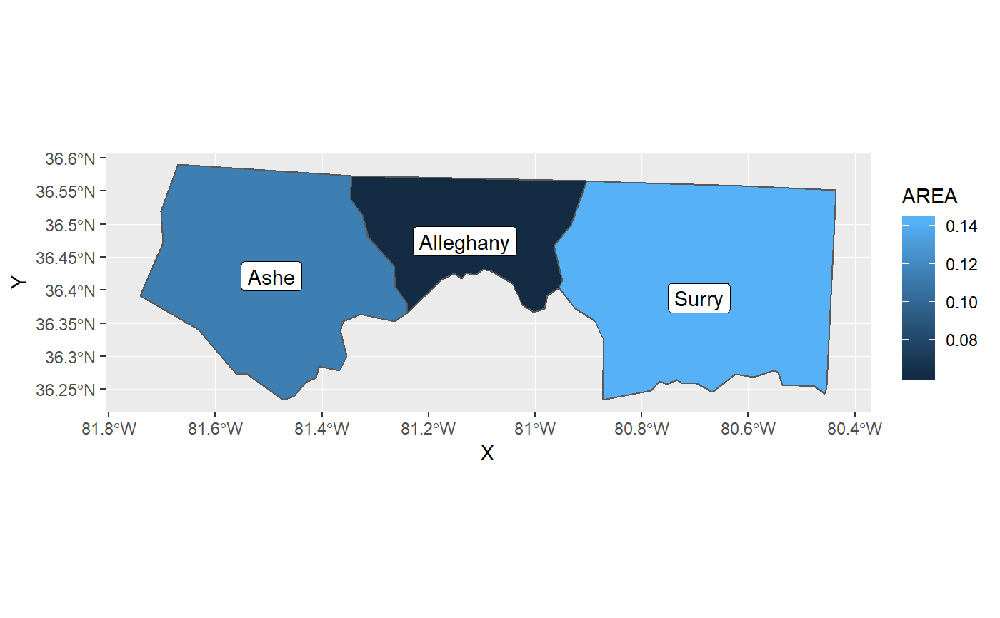
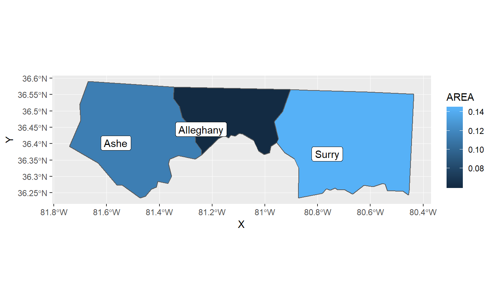
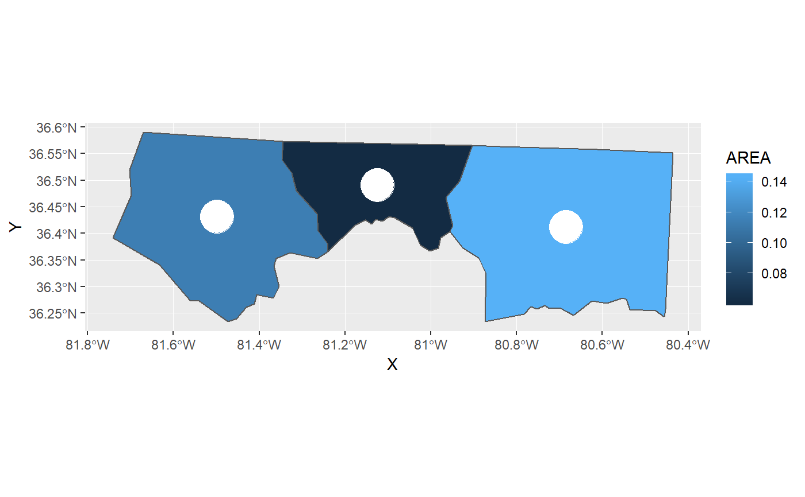

geom_sf_label.RdProvides label and text geoms that automatically retrieve the sf object's coordinates.
StatSfCoordinates geom_sf_label(mapping = NULL, data = NULL, fun.geometry = sf::st_point_on_surface, ...) geom_sf_text(mapping = NULL, data = NULL, fun.geometry = sf::st_point_on_surface, ...) geom_sf_label_repel(mapping = NULL, data = NULL, fun.geometry = sf::st_point_on_surface, ...) geom_sf_text_repel(mapping = NULL, data = NULL, fun.geometry = sf::st_point_on_surface, ...)
| mapping | Set of aesthetic mappings created by |
|---|---|
| data | The data to be displayed in this layer. There are three options: If A A |
| fun.geometry | A function that takes a |
| ... | Other arguments passed to the underlying function. |
An object of class StatSfCoordinates (inherits from Stat, ggproto, gg) of length 4.
These functions are thin wrappers of usual geoms like geom_label(), the only difference is that
they use StatSfCoordinates for stat. More precisely:
geom_sf_label() is the thin wrapper of geom_label.
geom_sf_text() is the thin wrapper of geom_text.
geom_sf_label_repel() is the thin wrapper of geom_label_repel.
geom_sf_text_repel() is the thin wrapper of geom_text_repel.
Depending on the type of given sfc object, some variables between X, Y, Z
and M are available. Please read Esamples section how to use these.
nc <- sf::st_read(system.file("shape/nc.shp", package = "sf"), quiet = TRUE) # st_point_on_surface may not give correct results for longitude/latitude data nc_3857 <- sf::st_transform(nc, 3857) # geom_label() for sf ggplot(nc_3857[1:3, ]) + geom_sf(aes(fill = AREA)) + geom_sf_label(aes(label = NAME))# ggrepel::geom_label_repel() for sf ggplot(nc_3857[1:3, ]) + geom_sf(aes(fill = AREA)) + geom_sf_label_repel( aes(label = NAME), # additional parameters are passed to geom_label_repel() nudge_x = -5, nudge_y = -5, seed = 10 )# Of course, you can use StatSfCoordinates with any geoms. ggplot(nc_3857[1:3, ]) + geom_sf(aes(fill = AREA)) + geom_point(aes(geometry = geometry,stat(X), stat(Y)), stat = StatSfCoordinates, fun.geometry = sf::st_centroid, colour = "white", size = 10)